git --version
# git version 2.39.3Using git and GitHub with RStudio
This session will cover:
- Setting up
giton computer- Installing git
- Setting up your identity
- git basic workflow using RStudio
- Cloning a Repository from GitHub to your computer using RStudio projects
- Tracking changes to your scripts
- Pushing your changes to GitHub
Setting up git on your computer
MacOSX and Linux computers all come with git pre-installed, but it is not always directly usable. The best way to test if git is ready to use is at the command line:
It should return something like above. If you get an error, you will have to install git
Installing git
You can download a copy of git here: https://git-scm.com/downloads and follow the instructions according to your Operating System.
Windows
You can keep the options to default during the installation, until you reach Configuring the terminal emulator to use with Git Bash -> be sure Use MinTTY is selected. This will install both git and a set of useful command-line tools using a trimmed down Bash shell.
Mac OSX
Depending on the version, you might have to run a few commands from the terminal. Please refer to the README.txt that comes with the download regarding the exact steps to follow.
Setting up your git identity
Before you start using git on any computer, you will have to set your identity on your system, as every snapshot of files is associated with the user who implemented the modifications to the file(s).
Open the Terminal or git bash and then type the following commands.
Setup your profile
At the commande line
If you are not sure if you have already set your git identity you can check this running this command:
git config --global --listIf you identity is not set yet, you need to provide your name and email (we recommend to use the same email as used when setting your GitHub account):
git config --global user.name "your Full Name"
git config --global user.email "your Email"Optional
Check that everything is correct:
git config --global --listModify everything at the same time:
git config --global --editSet your text editor:
git config --system core.editor nanoHere nano is used as example; you can choose most of the text editor you might have installed on your computer (atom, sublime, notepad++ …).
Problem with any of those steps? Check out Jenny Brian Happy git trouble shooting section
Using R
If you are an R user, the usethis package is your friend!! You can use this package to check and set up your git identity.
Check if you identity is set up:
# install.packages("usethis")
usethis::git_sitrep()If you git identity is not yet set, you should see something like this:
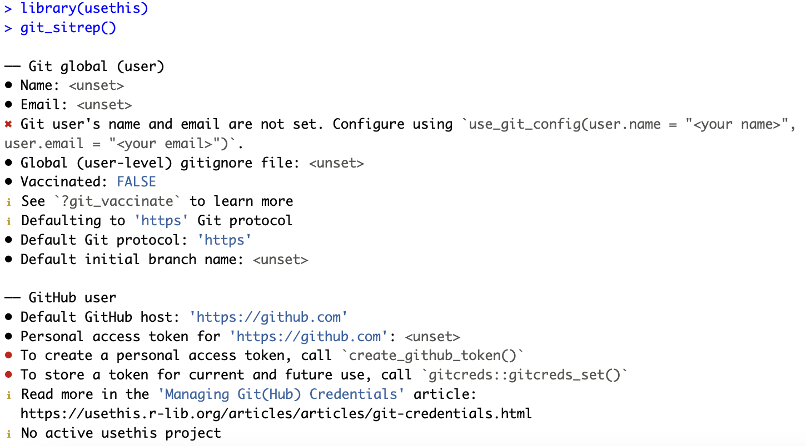
You can set your git user name and email as follow:
usethis::use_git_config(user.name = "Julien Brun", user.email = "julien.brun@ucsb.edu")Linking git and RStudio
In most cases, RStudio should automatically detect git when it is installed on your computer. The best way to check this is to go to the Tools menu -> Global Options and click on git/SVN
If git is properly set up, the window should look like this:
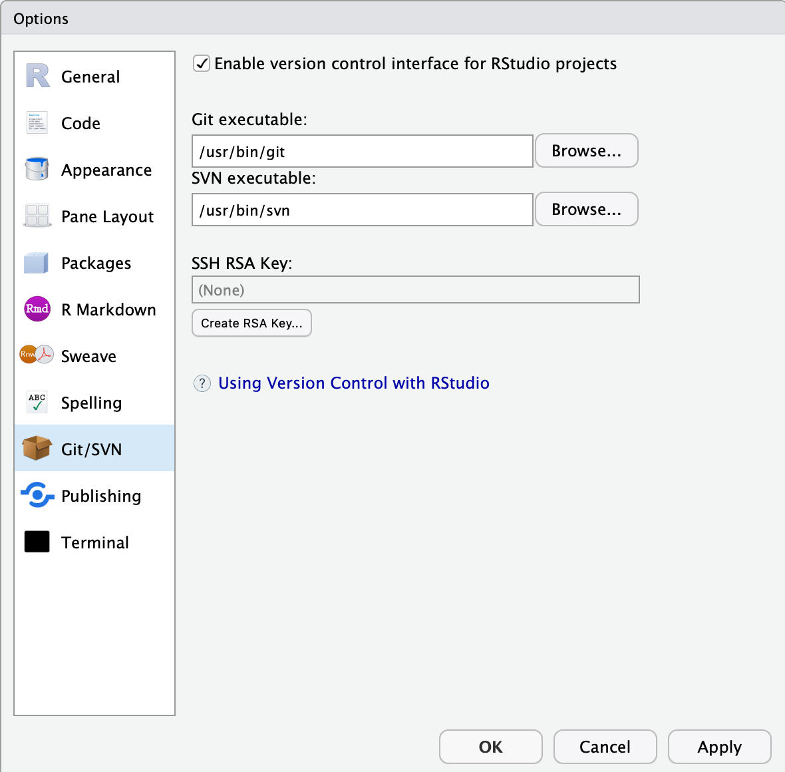
Click OK.
Note: if git was not enabled, you might be asked to restart RStudio to enable it.
Setting up your GitHub Personal Access Token (PAT)
Almost there! The last setup step we need to do is taking care of our authentication with GitHub, so we can download and upload changes to GitHub.
usethis::create_github_token()This will open your web browser and send you to a page on GitHub (you might be asked to log in your account). Most of the options have already been set for us, we only need to update:
- the Note field by describing what is the token for. We recommend a combination describing the computer it is use on and what it is going to be use for.
- Expiration to 90 days. Note that GitHub will send you an email when it’s time to renew your token that is about to expire. It is easier to not let the token expire, otherwise you will have to regenerate a new one and do all the setup again.
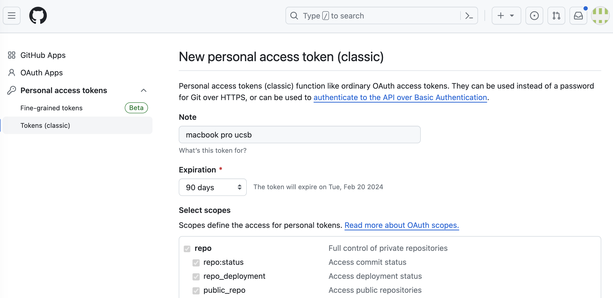 You can leave all the other options as selected. Click on Generate token green button at the bottom of the page.
You should be redirected to a new page where you can see your token. This is the only time you will be able to see it, so do not close this page before you are done with the setup!. Copy your PAT to your clipboard. Back to RStudio, run the following command:
gitcreds::gitcreds_set()This will prompt you to paste the PAT you just copied from GitHub. Paste your PAT and hit Enter. You you should see a few message letting you know that the token has been setup.
Congratulations, you are all done with setting up your computer 🎉 It is a one time job, but note that if you use several computers/servers, you will have to do those steps again on each machine.
Tracking File Changes with git
Basic Workflow Overview
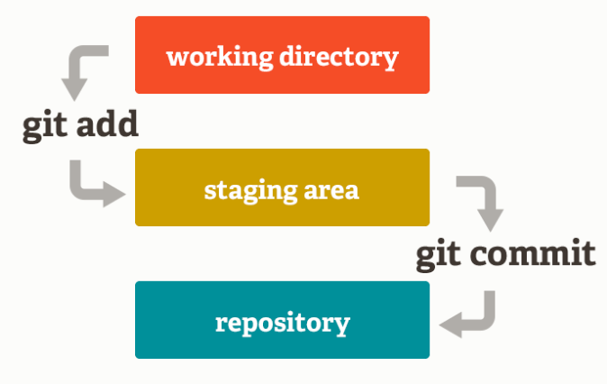
You modify files in your working directory and save them as usual
You add snapshots of your changed files to your staging area
You do a commit, which takes the files as they are in the staging area and permanently stores them as snapshots to your Git directory.
We can make an analogy with taking a family picture, where each family member would represent a file.
- Adding files (to the staging area), is like deciding which family member(s) are going to be on your next picture
- Committing is like taking the picture
This 2-step process enables you to flexibly group files into a specific commit.
These steps are repeated for every version you want to keep (every time you would like to use save as). Every time you commit, you create a new snapshot, and you add the new version of the file to the git database while keeping all the previous versions in the database. It creates a history of the content of your repository that is like a graph that you can navigate:
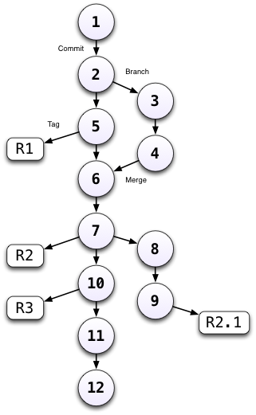
Using git from Rstudio
Tracking changes
RStudio provides a great interface to git helping you navigate the git workflow and getting information about the state of your repository through nice icons and visualizations of the information.
If you click on the Git tab in your RStudio upper-right panel, you should see the following information
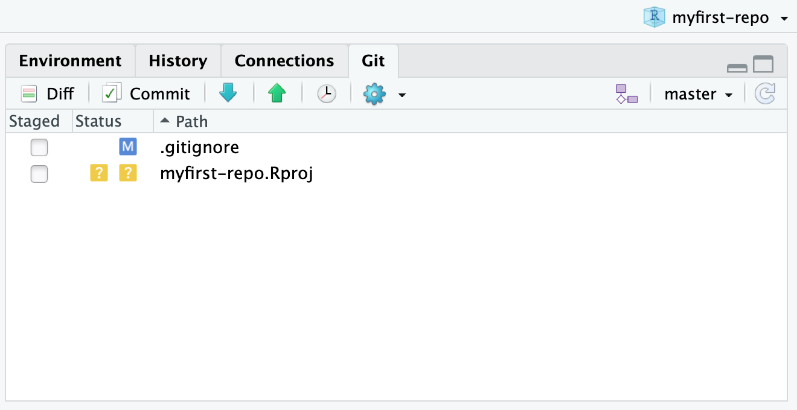
The RStudio Git pane lists every file that’s been added, modified or deleted. The icon describes the change:

In our case, it means that:
- the
.gitignorefile has been modified since the last commit - the
.Rprojfile has never been tracked bygit(remember RStudio just created this project file for us)
Note also that the README.md file is not listed, but it exists (see Filespane). It is because files with no modifications since the last commit are not listed.
GitHub has created the .gitignore file for us and we have not modified it since. So why is it listed as modified? We can check this by clicking on the Diff button (upper-left on the Git pane).
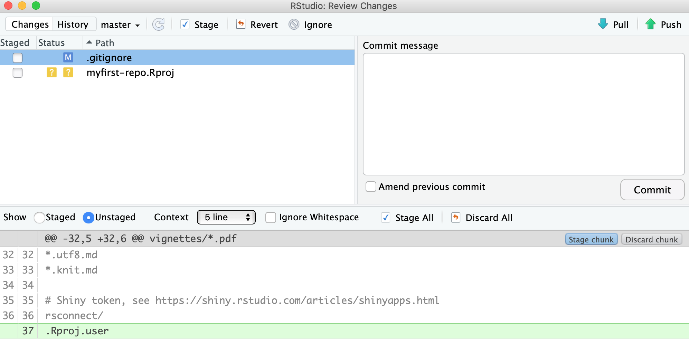
We can see that a new line (in green) has been added at the end of the .gitignore file. In fact, RStudio did that when creating the project to make sure that some temporary files were not tracked by git.
Let us improve the content of the README.md file as below to make it more descriptive.

As soon as you save your changes, you should see the README.md file listed as modified in the git pane.

Let us look at the diff of the README.md file. As you can see, the original lines are in red, in other words for git those lines have been deleted. The new lines that we just typed are in green, which indicates that these lines have been added for git. Note the line numbers in the left margin that help you to track which lines have been removed and added.

Keeping Changes as Snapshots
Now we would like to save a snapshot of this version of the README.md file. Here are the steps we will need to do:
- Add the file to the next commit by checking the box in front of the file name in the git pane.
Note that the iconMwill move to the left to show you that this file is now staged to be part of the next commit - Commit:
- Click the
Commitbutton at the top of the git pane - Write a short but descriptive commit message in the new window
- Click on the the
Commitbutton to save this version of the file in the git database - Close the windows to get back to the main RStudio window
- Click the
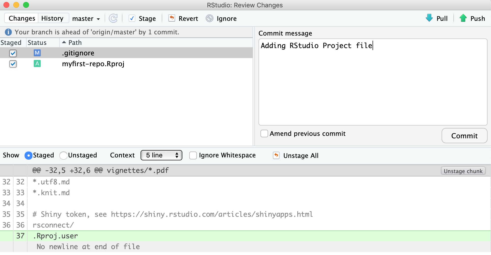
Once done, add both the .gitignore and the myfirst-repo.Rproj and commit those files together.
 Note that the icons at the top of the git pane have been organized in sequence from left to right to match the git workflow.
Note that the icons at the top of the git pane have been organized in sequence from left to right to match the git workflow.
Good Commit Message Tips
Clearly, good documentation of what you’ve done is critical to making the version history of your repository meaningful and helpful. It is tempting to skip the commit message altogether, or to add some simple message like ‘Updates’. It is better to use messages that will be helpful to your future self in deducing not just what you did, but why you did it. Also, commit messages are best understood if they follow the active verb convention. For example, you can see that my commit messages all started with a past tense verb, and then explained what was changed.
While some of the changes we illustrated here were simple and easily explained in a short phrase, for more complex changes, it is best to provide a more complete message. The convention, however, is to always have a short, terse first sentence, followed by a more verbose explanation of the details and rationale for the change. This keeps the high level details readable in the version log. I can not count the number of times I have looked at the commit log from 2, 3, or 10 years prior and been so grateful for the diligence of my past self and collaborators.

Looking at the Repository History
We have done 2 new commits at this point. Let us look at the commit timeline we have created so far. You can click on the Clock icon at the top to visualize the history.
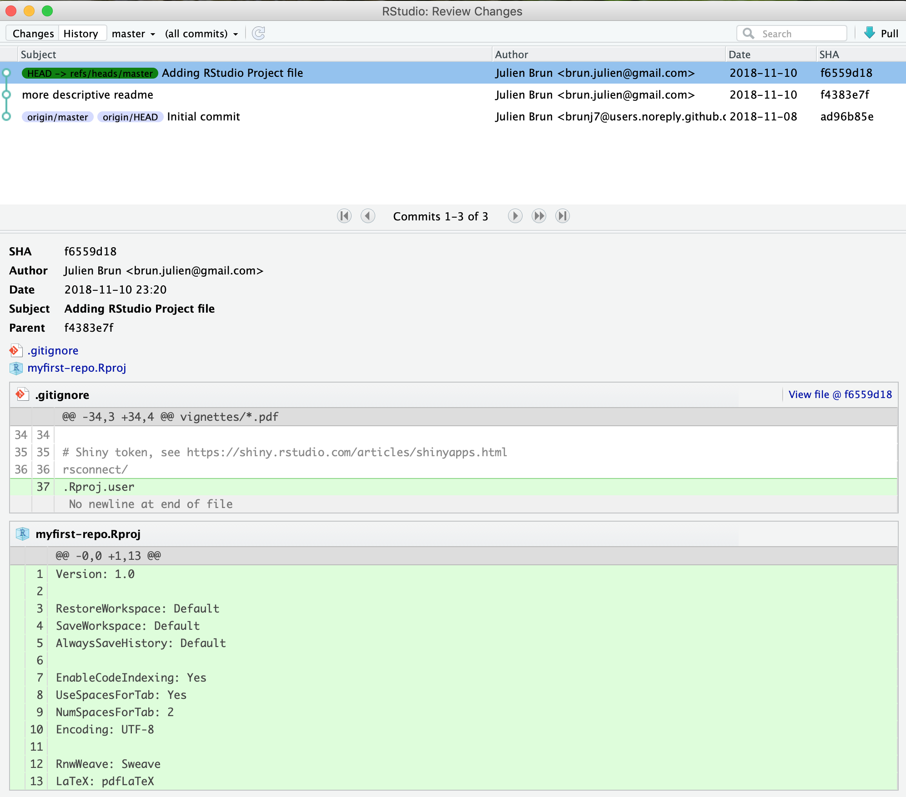
You can see that there has been 3 commits so far. The first one was done by GitHub when we created the repository and the 2 commits we just did. The most recent commit is at the top.
Sending changes back to GitHub
Now that we have created these two commits on our local machine, our local version of the repository is different from the version on GitHub. RStudio communicate this information to you. If you look below the icons on the git pane, you will see the warning message: “Your branch is ahead of ‘origin/master’ by two commits”. This can be translated as you have two additional commits on your local machine that you never shared back to the remote repository on GitHub. Open your favorite web browser and look at the content of your repository on GitHub. You will see the old version of the README.md and .gitignore file and no trace of the .Rproj file.
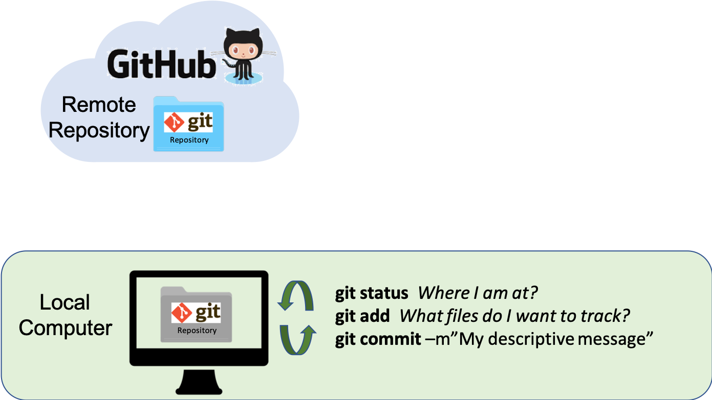
There are two git commands to exchange between local and remote versions of a repository:
pull: git will get the latest remote version and try to merge it with your local versionpush: git will send your local version to the remote version of the repository (in our case GitHub)
Before sending your local version to the remote, you should always get the latest remote version first. In other words, you should pull first and push second. This is the way git protects the remote version against incompatibilities with the local version. You always deal with potential problems on your local machine. Therefore your sequence will always be:
pullpush
RStudio has icons for that on top of the git pane, with the blue arrow down being for pull and the green arrow up being for push. Remember the icons are organized in sequence!
Let us do the pull and push to synchronize the remote repositories. We have now synchronized the local (our computer) and remote (on GitHub) versions of our repository.
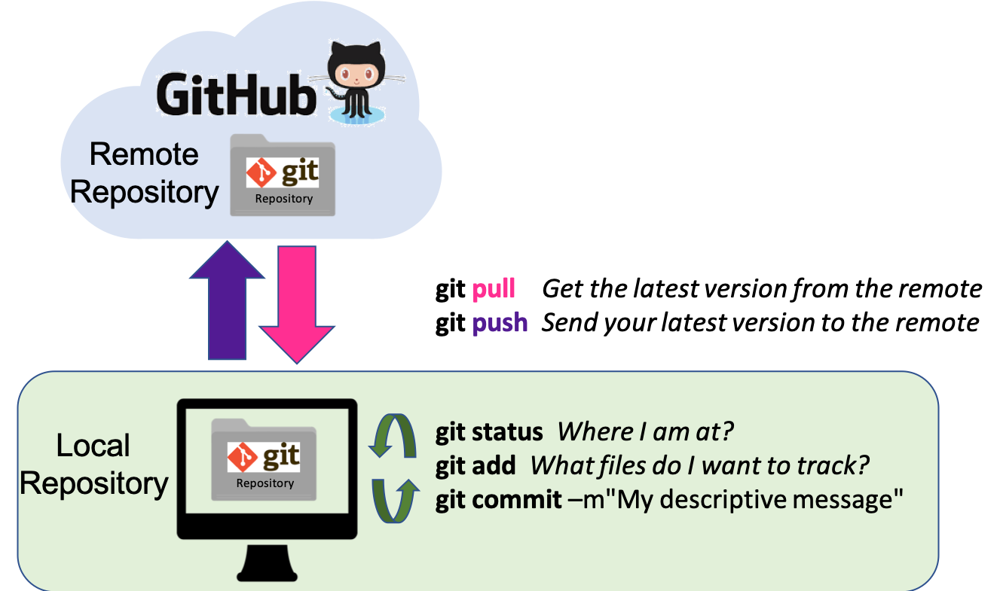
You can now look at the page of your repository on GitHub, you should see 3 files with the exact same version that you have on your local!
Stage versus Commit
The functional difference between “staging” a file and “committing” one can be a little tough to grasp at first so let’s explore that briefly here. We can make an analogy with taking a family picture, where each family member would represent a file.
- Staging files is like deciding which family member(s) are going to be in your next picture
- Committing is like taking the picture
This 2-step process enables you to flexibly group files into a specific commit. Those groupings can be helpful to you later if you’re trying to find what you changed for a specific task (because those changes likely are all in the same commit).